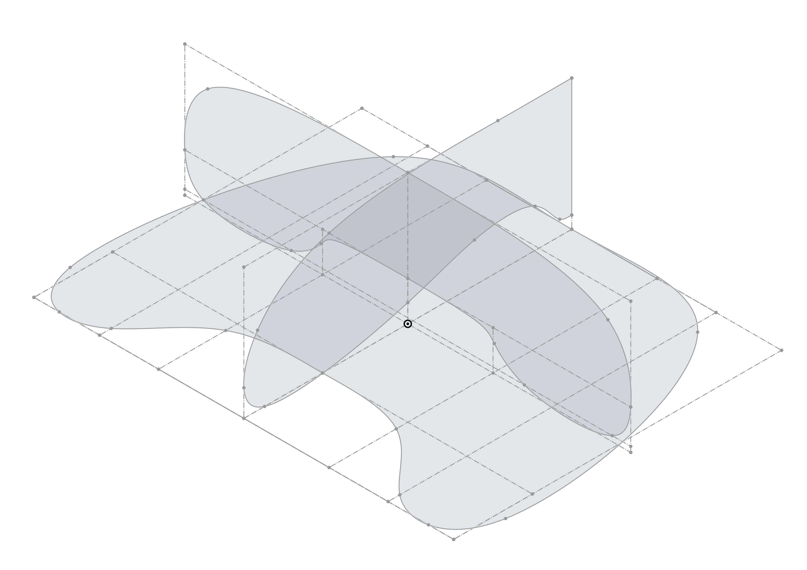
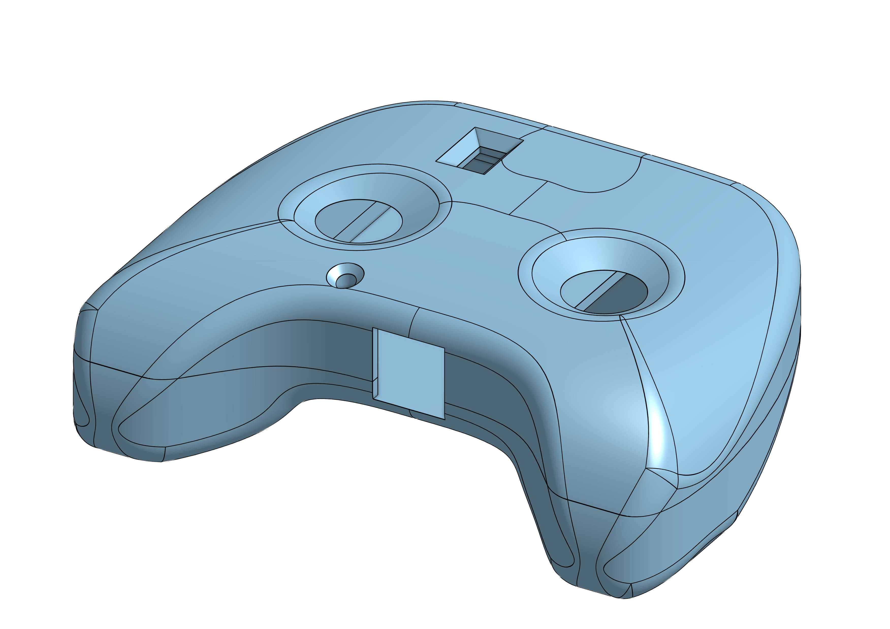
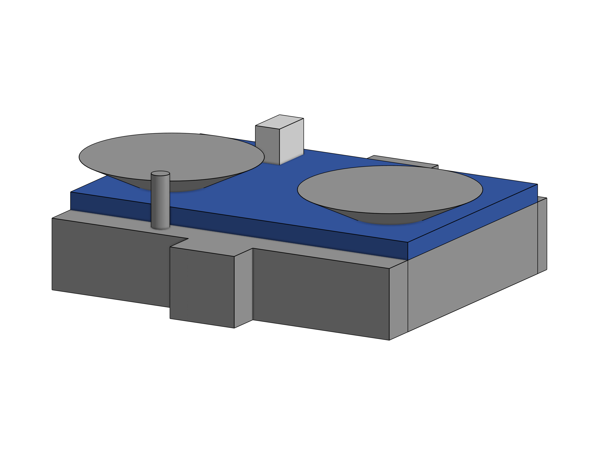
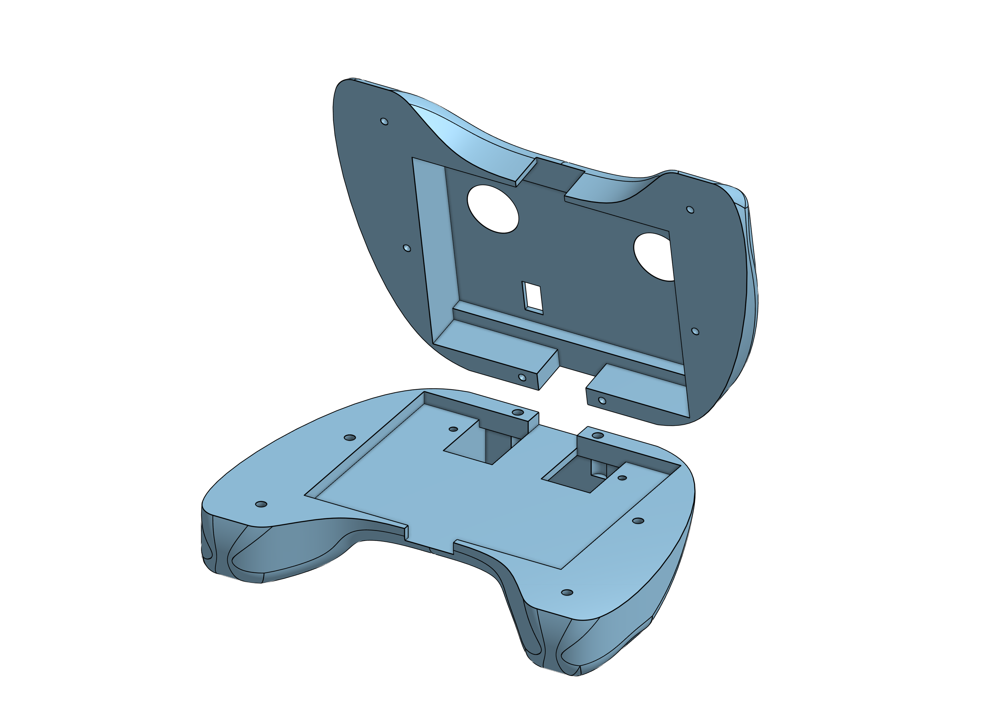
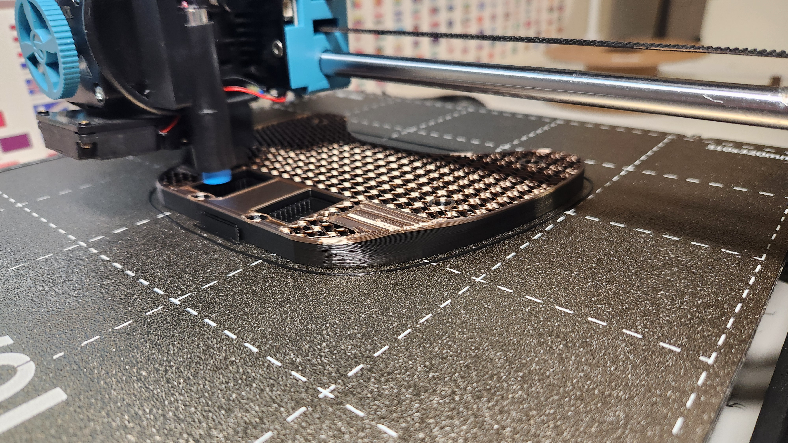
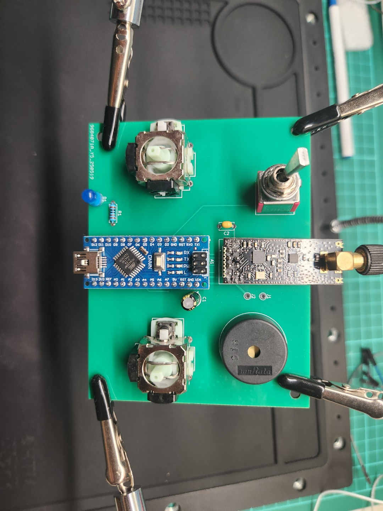
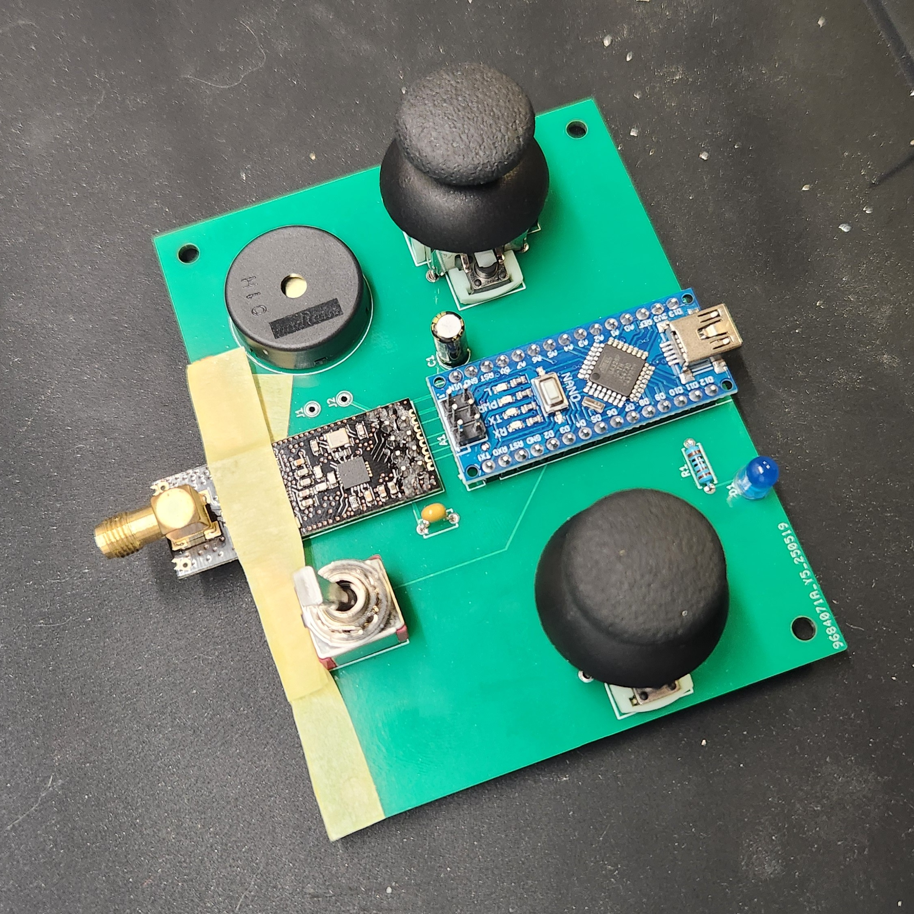

This week is the final week before submitting my project, so I must ensure everything is complete. This
includes 3D printing the case for my controller, soldering the components onto the PCB scheduled to
arrive this Friday, and writing code to ensure that the PCB and components work together. Since my PCB
has been in transit since last week after I sent it off for fabrication, I focused on 3D printing the
casing at the beginning of the week. Once the PCB arrives, I will solder the components together.
First thing i did this week was load up onshape which is a cloud-based CAD platform that allows users to
create a collaborate 3D models in real time from anydevice, making it an ideal for me since i work on my
home computer and my laptop, i have worked with CAD in the past when I got my 3D printer so i did not
have to lurn how to onshape so i could go straight into it. I first chose Onshape as the CAD because it
was cloud-based. Still, also its free i could have used Fusion 360, which is one of the best CAD’s out
there but its not free and comes at quite a price although since i am a student i would able to use it
for free but after i graduate i will have to pay so i decided to use a cad that i can use for free
forever.

The controller's shape can be quite curvy and is not a simple box. Although I could have made a box, I
wanted to give myself a little challenge for the extra comfort it would give me.
The way that OnShape works is very simple. At its basics, you draw a scratch, a 2D drawing of shapes
with dimensions, and then you can extend it to get three dimensions. This makes rectangular shapes easy
to make in Onshape. I did the same thing for my design, except I used a spline, a multi-point curve,
allowing me to have a curvy shape.
I created sketches of all three faces—top, side, and front- to achieve a curvy shape from every angle. I
then extruded each face and retained only the volume overlapping all three sketches. The image above
illustrates these top, side, and front sketches. By doing this, I got the shape of the main body of the
controller. With this, the model had some sharp edges, so I used the fillet tool to curve the edges to
make it more comfortable to hold.

After making the basic shape of the controller, it was time to make the controller contain my PCB that I
have been working on for the past few weeks the idea for this is simple make a hole inside the
controller and then put a few holes in to allow parts of the pcb to stick out like the joysticks
antanina led switch and usb programer out the back.
I used the same method as before to create a sketch instead of extruding it to achieve this. However,
this time, I am not adding material; I am removing it. The first step was to create the main hole for
the PCB to fit into. I measured the width and length of the PCB design and then constructed a simple box
that would hold the PCB. The next part was straightforward; I measured the sizes of the components and
designed a larger shape to accommodate each component. By the end of creating all these shapes, I had
various parts that I now needed to remove from the main body (as seen in the image below). In the past,
when I designed in Onshape, I simplified the process by using the same tool to extrude, but switched it
from "add" to "remove." However, with this many shapes, that approach didn't seem appropriate. Instead,
I chose the "add" option and then combined all the shapes using a Boolean operation. I then removed the
mass from the main body using the same boolean.

After some ttweking of position and size of the holes i was pretty happy with the looks of the
controller, but the new problem was to actually get the model printed for a 3d printer to work well you
need to have a flat part of the modlol on the ground so the print can stick to the base plat also with
this you want as minimal overhang as possible which is parts of the print that the printer will have to
print in the air rather than onto already part of the print having this happen will make the print
really messy one way to avoid it is to put in supports for the print which just is some easy tear away
plastic that holds up the over hang but the best way is just not to have any over hang at all.
The way that the shape is i can just print it all at once there is no large fla part touching the base
plat there is too much overhang and i need a way to put the pcb into the print this fix is very easy all
i need to do was cut the model in half and now facing both cut faces down this solve al the previous
issues no minimal overhang a way to put the pcb in and a flat surface to put on the baseplate of the 3D
printer.
But with cutting the print in two comes a new problem, since the print is now in two parts instead of
the one i need a way to put them back together after the print is done i dont want to just glue the
parts together because i will want to be able to take my pcb in and out that when screws where a good
option.
To allow for screws i need to make screw holes inside the print this was pretty straight forward and i
used the same technure to remove as i did with the main hole in the end i had 6 screw holes in total to
the same size as the screws that i have.

After some tweaking of everything i was pretty happy but then i relised that i completely forgot about
the 9volt battery that i needed to power my pcb so i needed to make a new extruded part out of the
bottom on the controller when making this found its much eser to just create new parts and add them
together with a boolean when dealing with more complicated creations so i added a rectangular prism big
enough to fit the bateryinside mad a smaller rectangular prism inside the other one to with two pointing
out at the top to give a space to run a cable through to also be albe to put a new battery in and out i
added a lid to the bater box by splitting the box in half and adding two more screw holes.



Python
const int potPin = A0; // Pin connected to the potentiometer's
void setup() {
Serial.begin(9600); // Initialize serial communication at 9600 baud rate
}
void loop() {
int potValue = analogRead(potPin); // Read the potentiometer's value (0 to 1023)
Serial.println(potValue); // Print the value to the Serial Monitor
delay(100); // Short delay for stability
}
Python
const int buzzerPin = 3; // Pin connected to the buzzer
// Define the melody notes (in Hz)
int melody[] = {2637, 3136, 3951}; // C4, D4, E4
// Define the note durations (in milliseconds)
int noteDurations[] = {150, 150, 150};
void setup() {
pinMode(buzzerPin, OUTPUT);
}
void loop() {
for (int i = 0; i < 3; i++) {
tone(buzzerPin, melody[i]);
delay(noteDurations[i]);
noTone(buzzerPin);
delay(20); // Short pause between notes
}
delay(1000); // Wait before repeating the melody
}
